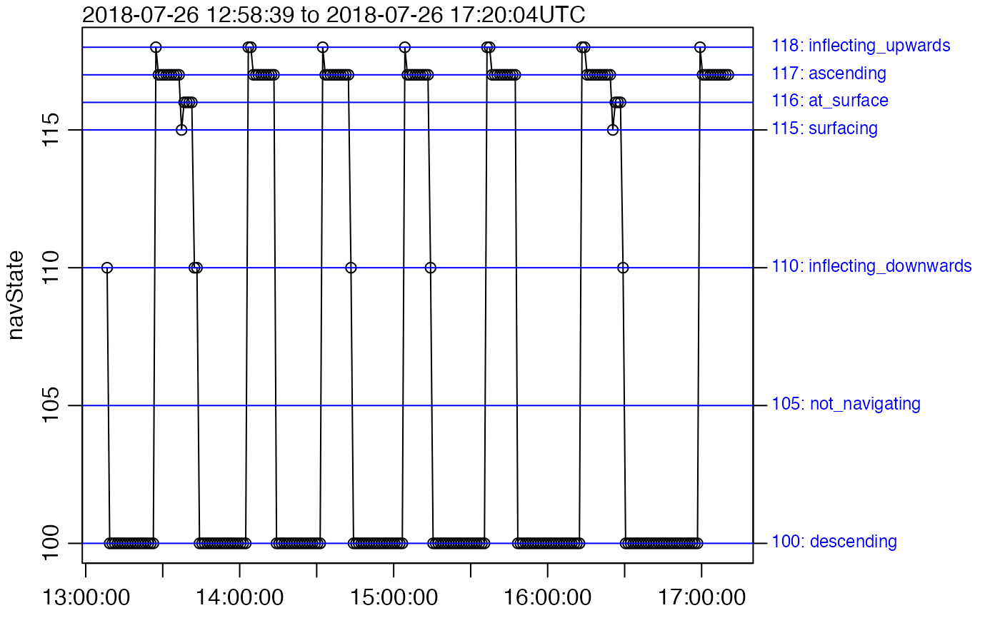

Reads real-time CSV files produced by a SeaExplorer glider, as
detected by the presence of ".sub." in their names.
Such real-time data are decimated before transmission, and thus do not
represent the full data collected by the glider sensors.
(Use [read.glider.seaexplorer.delayed)] instead of
this, to read delayed-mode data, as downloaded from the glider
after recovery.)
[read.glider.seaexplorer.delayed)]: R:read.glider.seaexplorer.delayed)
read.glider.seaexplorer.realtime(
directory,
yo,
level = 1,
progressBar = interactive(),
missingValue = 9999,
debug
)The directory in which the realtime SeaExplorer files are located.
A numeric value (or vector) specifying the yo numbers to
read. If this is not provided, read.glider.seaexplorer.delayed()
will read all yo numbers for which files are present in dir.
Ignored by read.glider.seaexplorer.realtime and
only included for similarity with
read.glider.seaexplorer.delayed().
either a logical or character value that controls
whether/how to indicate the progress made in reading and interpreting
the data. This can be useful, since the work can be slow. If progressBar
is a logical value, then it indicates whether to show textual progress
with txtProgressBar(). If progressBar is the character value "shiny",
then shiny::setProgress() and shiny::incProgress() will be used,
on the assumption that the call to read.glider.seaexplorer.realtime()
was made within the context of a call to shiny::withProgress().
The default is to use the value returned by interactive(), i.e.
to use a textual progress indicator, but only in interactive mode.
A value that indicates missing data; all
values that match this are set to NA.
an integer specifying whether debugging information is
to be printed during processing. If this is not provided, then
the value of getOption("gliderDebug",0) is used.
The printing is done by a call to gliderDebug.
Setting debug=0 turns off this form of debugging, while
higher values may yield more information, depending on the
function. If one glider function calls another, it
passes the value of debug but decreased by 1, which means
that the value of debug controls not just the breadth
of debugging, but also the depth.
A flag scheme is set up according to the IOOS classification system (see Table 2 of reference 1), as follows.
| Name | Value | IOOS Name | Description |
pass | 1 | Pass | Data has passed quality control (QC) tests |
not_evaluated | 2 | Not Evaluated | Data has not been QC tested |
suspect | 3 | Suspect or of High Interest | Data is considered to be of suspect or high interest |
fail | 4 | Fail | Data is considered to have failed on one or more QC tests |
missing | 9 | Missing Data | Data are missing; using a palceholder |
FIXME: are the original names the same in both "raw" and "sub" datasets?
Data in the gli files are stored in the glider item within
the data slot of the returned object, renamed as follows.
(Note that there is also an empty column in the seaexplorer data files,
caused by a semicolon at the ends of the lines. This is read by R, but
then discarded and not stored in the glider object.)
Data in the gli files are stored in the glider item within
the data slot of the returned object, renamed as follows. (If the
new name is listed as . that means that the old name is retained,
but bear in mind that a new name will likely be assigned at some later
point in the development of this package.)
| OriginalName | Name | Notes |
Timestamp | time | Converted to POSIXt time. |
NavState | navState | - |
SecurityLevel | alarm | - |
Heading | heading | - |
Pitch | pitch | - |
Roll | roll | - |
Depth | pressureNav | - |
Temperature | temperatureInternal | - |
Pa | pressureInternal | - |
Lat | latitude | Converted to decimal degrees. |
Lon | longitude | Converted to decimal degrees. |
DesiredH | headingDesired | - |
BallastCmd | ballastCmd | - |
BallastPos | ballastPos | - |
LinCmd | linCmd | - |
LinPos | linPos | - |
AngCmd | angCmd | - |
AngPos | angPos | - |
Voltage | voltage | - |
Altitude | altitude | - |
Data in the pld1 files are stored in the payload1 item within
the data slot of the returned object, renamed as follows. Where possible,
the corresponding IOOS NetCDF file variable names are also listed [see
Integrated Ocean Observing System (U.S.). “NGDAC NetCDF File Format Version
2,” March 27, 2019.
https://github.com/ioos/ioosngdac/wiki/NGDAC-NetCDF-File-Format-Version-2].
| OriginalName | Name | IOOS name | Notes |
PLD_REALTIMECLOCK | time | time | Converted to POSIXt time. |
NAV_RESOURCE | navState | - | - |
NAV_LONGITUDE | longitude | lon | Converted to decimal degrees. |
NAV_LATITUDE | latitude | lat | Converted to decimal degrees. |
NAV_DEPTH | pressureNav | depth | - |
FLBBCD_CHL_COUNT | chlorophyllCount | - | - |
FLBBCD_CHL_SCALED | chlorophyll | - | - |
FLBBCD_BB_700_COUNT | backscatterCount | - | - |
FLBBCD_BB_700_SCALED | backscatter | - | - |
FLBBCD_CDOM_COUNT | cdomCount | - | - |
FLBBCD_CDOM_SCALED | cdom | - | - |
GPCTD_CONDUCTIVITY | conductivity | - | - |
GPCTD_TEMPERATURE | temperature | temperature | degC |
GPCTD_PRESSURE | pressure | pressure | dbar |
GPCTD_DOF | oxygenFrequency | - | - |
| - | salinity | salinity | Practical Salinity (computed) |
Data in the pld2 files (or others for additional payloads)
are ignored in this version of the package. Please contact the
authors, if you need to handle such files.
IOOS. “Manual for Real-Time Oceanographic Data Quality Control Flags,” May 2017. https://cdn.ioos.noaa.gov/media/2017/12/QARTOD-Data-Flags-Manual_Final_version1.1.pdf.
Other functions for seaexplorer gliders:
read.glider.seaexplorer.delayed()
Other functions to read glider data:
read.glider.netcdf.ioos(),
read.glider.netcdf(),
read.glider.seaexplorer.delayed(),
read.glider.slocum.netcdf(),
read.glider.slocum()
library(oceGlider)
directory <- system.file("extdata/seaexplorer/sub", package="oceGlider")
g <- read.glider.seaexplorer.realtime(directory)
plot(g, which="navState")

plot(g, which="S")
plot(g, which="T")